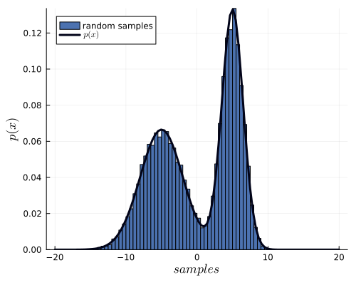

McmcHermes.jl
A documentation for the McmcHermes package.
McmcHermes is a pure-Julia implementation of Metropolis Hasting Algorithm under an MIT license. McmcHermes will help you if you want to estimate model parameters or sample a probability density distribution.
Installation
using Pkg
Pkg.add("McmcHermes")Basic Usage
This guide assumes that you already have define your likelihood, prior and the logarithm of the posterior probability as in the example below.
Sampling
If you want to draw samples from two Gaussian distributions, you would do something like:
function pdf(X::Number, params::Vector)
s1, s2, mu1, mu2 = params[1], params[2], params[3], params[4]
return 1 / (sqrt(2 * pi) * s1) * exp( -0.5*((X - mu1)/s1)^2 ) + 1 / (sqrt(2 * pi) * s2) * exp( -0.5*((X - mu2)/s2)^2 )
end
function gaussian_function(X::Vector, params::Vector)
x_values = collect(range(minimum(X), maximum(X), length=length(X)))
s1, s2, mu1, mu2 = params[1], params[2], params[3], params[4]
return 0.5 ./ (sqrt(2 * pi) .* s1) .* exp.(-0.5*((x_values .- mu1)./s1).^2) .+ 0.5 ./ (sqrt(2 * pi) .* s2) .* exp.(-0.5*((x_values .- mu2)./s2).^2)
end
using McmcHermes
params = [3, 1.5, -5, 5]
interval = [-20, 20]
sampling = McmcHermes.sampler(pdf, 10000, interval, params)
x_values = Vector{Float64}(range(interval[1], interval[2], 100))
histogram(sampling, xlabel=L"samples", ylabel=L"p(x)", xguidefontsize=12, color=:gray, yguidefontsize=12, normalize=:pdf, show=true, label="samples")
plot!(x_values, gaussian_function(x_values, params), lw=3, size=(500,400), label="Function", lc=:orange, show=true)
Parameter estimation
McmcHermes can be used to estimate parameters from a model. For instance, from one of my papers A Gaia astrometric view of the open clusters, Pleiades, Praesepe, and Blanco 1; the estimation of the nine parameters of the assumed proper motions model can be estimated through McmcHermes.
The log-likelihood of the proper motions model is defined as
\[\log \mathcal{L}(x, y \mid \theta) = \sum \log \left[ A_{\text{circ}} \cdot \exp\left( -\frac{1}{2} \left( \left( \frac{x - \mu_{xc}}{s} \right)^2 + \left( \frac{y - \mu_{yc}}{s} \right)^2 \right) \right) + A_{\text{elip}} \cdot \exp\left( -\frac{1}{2(1 - \rho^2)} \left( \left( \frac{x - \mu_{xf}}{s_x} \right)^2 + \left( \frac{y - \mu_{yf}}{s_y} \right)^2 - 2\rho \left( \frac{x - \mu_{xf}}{s_x} \right) \left( \frac{y - \mu_{yf}}{s_y} \right) \right) \right) \right]\]
with
\[A_{\text{circ}} = \frac{n_c}{2\pi s^2}\]
\[A_{\text{elip}} = \frac{1 - n_c}{2\pi s_x s_y \sqrt{1 - \rho^2}}\]
That function depends on nine parameters
\[n_c,\quad s,\quad s_x,\quad s_y,\quad \rho,\quad \mu_{xc},\quad \mu_{yc},\quad \mu_{xf},\quad \mu_{yf}\]
Let's now estimate them by using the McmcHermes package. First, here is the plot of the proper motions in the field of the Pleiades open cluster
using Distributions, Plots, LaTeXStrings, DataFrames, CSV
df = DataFrame(CSV.File("./pleiades_field-result.csv"))
pleiades_field = df[(df.pmra .>= 10) .& (df.pmra .<= 30) .& (df.pmdec .>= -55) .& (df.pmdec .<= -35), :]
x = pleiades_field[!,:pmra]
y = pleiades_field[!,:pmdec]
scatter(x, y, title="Pleiades Proper Motions", xlabel="pmra", ylabel="pmdec", legend=false, markersize=2)You can download the Pleiades field data from the Gaia Archive by using this query
SELECT * FROM gaiadr3.gaia_source AS gaia
WHERE CONTAINS(POINT('ICRS',gaia.ra,gaia.dec), CIRCLE('ICRS', 56.85, 23.51, 5))=1
AND gaia.visibility_periods_used > 6 AND gaia.pmra IS NOT NULL AND gaia.pmra != 0
AND gaia.pmdec IS NOT NULL AND gaia.pmdec != 0 AND gaia.parallax IS NOT NULL AND gaia.ruwe < 1.4
AND gaia.parallax_over_error > 10 AND gaia.astrometric_params_solved > 3
AND gaia.parallax >= 2Now, we define the likelihood and prior
function log_likelihood(X::Vector, params::Vector)
x, y = X[1], X[2]
nc, s, sx, sy, rho = params[1], params[2], params[3], params[4], params[5]
mu_xc, mu_yc, mu_xf, mu_yf = params[6], params[7], params[8], params[9]
amp_circ = nc ./ (2 * pi .* s.^2)
amp_elip = (1-nc) ./ (2 * pi * sx * sy * sqrt(1 - rho.^2))
Exp_circ = -0.5 * (((x .- mu_xc)./s).^2 .+ ((y .- mu_yc)./s).^2)
Exp_elip = -1 ./ (2*(1-rho.^2)) .* (((x .- mu_xf)./sx).^2
.+ ((y .- mu_yf)./sy).^2 .- 2 * rho * ((x .- mu_xf)./sx) .* ((y .- mu_yf)./sy))
z = amp_circ .* exp.(Exp_circ) + amp_elip .* exp.(Exp_elip)
return sum(log.(z))
end
function log_prior(params::Vector)
nc, s, sx, sy, rho = params[1], params[2], params[3], params[4], params[5]
mu_xc, mu_yc, mu_xf, mu_yf = params[6], params[7], params[8], params[9]
if 0.0 < nc < 1.0 && 0.0 < s < 10.0 && 0.0 < sx < 10.0 && 0.0 < sy < 10.0 && -1.0 < rho < 1.0
return 0.0
end
return -Inf
end
function log_probability(X::Vector, params::Vector)
x, y = X[1], X[2]
lp = log_prior(params)
if !isfinite(lp)
return -Inf
end
return lp + log_likelihood(X, params)
endFirst, let's apply the Maximum Likelihood Estimation to get a good initial guess
using Optim
make_closures(X) = params -> -log_likelihood(X, params)
data = [x, y]
nc, s, sx, sy, rho = 0.5, 1.0, 5.0, 5.0, 0.1
mu_xc, mu_yc, mu_xf, mu_yf = 20, -45, 20, -45
initparams = Vector{Float64}([nc, s, sx, sy, rho, mu_xc, mu_yc, mu_xf, mu_yf])
nll = make_closures(data)
opt_pm = optimize(nll, initparams, NelderMead(), autodiff=:forward)
mle_params = Optim.minimizer(opt_pm)
println("mle_params: ", mle_params) # [0.5703616168913359, 1.145121636314209, 4.683106119784698, 5.1177766210904485, -0.16776744025292578, 19.891677759318622, -45.419917930062915, 19.632955307887066, -43.415932987439774]Then, define the number of walkers, iterations, dimension of the parameter space and the initial guess. Here we use the initial guess obtained from the MLE.
using McmcHermes
n_iter, n_walkers = 5000, 50
n_dim = 9
seed = rand(n_walkers, n_dim) * 1e-4 .+ transpose(mle_params)
chains = McmcHermes.run_mcmc(log_probability, data, seed, n_iter, n_walkers, n_dim, a=0.01)
println(size(chains)) # (5000, 50, 9)The convergence of the chains can be validated by the Gelman-Rubin's diagnostic:
println("Gelman Rubin Diagnostic: ", McmcHermes.get_gelman_rubin(chains)) # 1.1161957469617692Finally, plot the corner plot with the chains.
flat_chains = McmcHermes.get_flat_chain(chains, burn_in=100, thin=10)
println(size(flat_chains)) # (24901, 9)
using PairPlots, CairoMakie
labels = Dict(
:nc => L"n_c",
:s => L"s",
:sx => L"s_x",
:sy => L"s_y",
:rho => L"\rho",
:mu_xc => L"\mu_{xc}",
:mu_yc => L"\mu_{yc}",
:mu_xf => L"\mu_{xf}",
:mu_yf => L"\mu_{yf}"
)
parameters = (:nc, :s, :sx, :sy, :rho, :mu_xc, :mu_yc, :mu_xf, :mu_yf)
data = NamedTuple{parameters}(eachcol(flat_chains))
pairplot(data; labels=labels, axis=(xlabelsize=18, ylabelsize=18))
Developed by J. Alfonso.